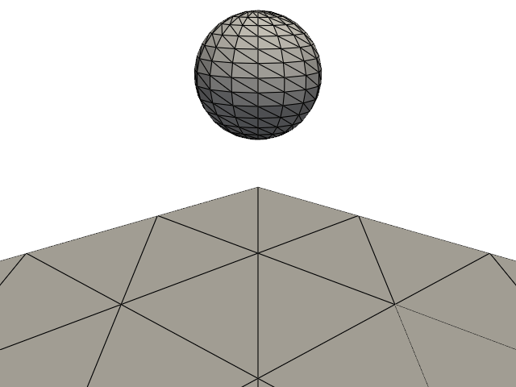

Note
Go to the end to download the full example code.
Rigid-body bounce with IPC contact
This example lets a rigid sphere fall under gravity and bounce on a fixed plane. It illustrates the rigid-body constraint, Newmark time integration, and IPC contact with a deliberately coarse model suitable for the online example gallery.
The longer, higher-resolution demonstration is available in
examples/rigid_body/rigid_body_bounce_ipc.py.
import numpy as np
import pyvista as pv
import fedoo as fd
Model
Only the rigid body’s six generalized degrees of freedom are integrated; the surface meshes describe the contact geometry.
gravity = 9.81
mass = 1.0
radius = 0.1
initial_height = 0.4
space = fd.ModelingSpace("3D")
space.new_variable("DispX")
space.new_variable("DispY")
space.new_variable("DispZ")
space.new_vector("Disp", ("DispX", "DispY", "DispZ"))
sphere_mesh = fd.Mesh.from_pyvista(
pv.Sphere(
radius=radius,
center=(0, 0, initial_height),
theta_resolution=16,
phi_resolution=16,
)
)
floor_mesh = fd.Mesh.from_pyvista(
pv.Plane(
center=(0, 0, 0),
direction=(0, 0, 1),
i_size=1.0,
j_size=1.0,
i_resolution=3,
j_resolution=3,
).triangulate(),
name="Floor",
)
body = fd.constraint.RigidBody(
sphere_mesh,
mass=mass,
inertia_tensor=(2 / 5) * mass * radius**2 * np.eye(3),
center_of_mass=np.array([0, 0, initial_height]),
)
body.set_force([0, 0, -mass * gravity])
body.set_rayleigh_damping(0.5)
body.set_static_obstacle(floor_mesh, dhat=0.01, kappa=1e8)
Transient solution
The output interval limits the trajectory to a small number of animation frames. The time step is also larger than in the standalone demonstration to keep documentation builds reasonably short.
problem = fd.problem.NonLinear(body.assembly)
problem.set_time_integrator(fd.time.SECOND_ORDER, fd.time.Newmark())
results = problem.add_output(
"rigid_body_bounce_gallery",
["Disp", "RigidDisp", "RigidRot"],
include_static_obstacles=True,
)
dt = 2e-3
problem.nlsolve(
dt=dt,
dt_max=dt,
tmax=0.8,
update_dt=True,
print_info=0,
interval_output=0.04,
)
Animation
fedoo.MultiFrameDataSet.write_movie() loads and plots the saved frames
automatically. Since the output includes static obstacles, the floor is
present in the movie without any additional PyVista animation code.
plotter = pv.Plotter(window_size=(640, 480), off_screen=True)
plotter.camera_position = [(0.8, -0.8, 0.55), (0, 0, 0.2), (0, 0, 1)]
results.write_movie(
"rigid_body_bounce.gif",
framerate=15,
plotter=plotter,
show_edges=True,
)

Total running time of the script: (0 minutes 10.983 seconds)